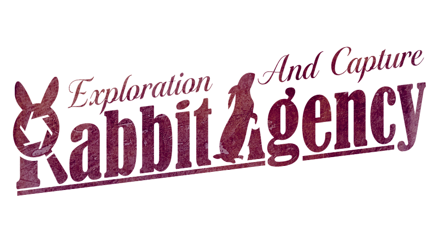

事前抽選
開催の約2週間前〜1週間前に公式Xにて受付
- 公式Xをフォロー@vrcRabbitAgency をフォローします。
- 告知ポストをリポスト「事前抽選のお知らせ」ポストをリポストします。
- 応募フォームから応募告知ポストの返信欄にある応募フォームから応募します。注意事項をよく読んでご記入ください。
- 抽選結果を待つ当選者の方には、受付終了後にDMでご連絡します。
※ リポストのみでは応募完了になりません。必ず応募フォームからご応募ください。

こまどアバター お写真デートRPイベント

調査員（キャスト）とふたり、恋人のフリをして
ワールドを調査し、写真を撮ってくること。
探偵事務所「RabbitAgency」は、こまどアバターの調査員（キャスト）と助手であるあなたが、“デート中のカップル”を装ってVRChatのワールドを探索し、依頼内容の調査・写真の撮影を行う、お写真デートロールプレイイベントです。
CASE FILE依頼書
VRC_RabbitAgencyは、こまどアバター「偽装カップルお写真デート」ロールプレイイベントです。
STORY
探偵事務所「RabbitAgency」は、VRChat内での依頼を受けて様々な調査を行う探偵事務所。今日もまた新しい調査依頼が事務所に舞い込んでくる。
しかし、事件の調査には危険が付きもの。調査員の安全の為、調査を行っている事がバレない様に調査を遂行しなければならない。
そこで、調査員である【キャスト】は、怪しまれないように臨時助手である【お客さん】と「デートしているカップル」を装って調査を行うことにした。
【キャスト】と【お客さん】に与えられた任務は、ワールド内を調査して、時間内に【撮影ターゲット】を探し出して写真を撮ってくる事。
"デート"と"秘密任務"どちらもこなせてこそ、一流の調査員だ。健闘を祈る。
—— 探偵事務所 RabbitAgency
ポイント
こまどアバターの可愛いキャストと1v1で少し長めの45分間のデートを楽しめます！！ カフェ系イベントや個室イベントとは違った一面が見られるかも？
イベントのテーマは"お写真デート"！イベントの思い出になるのはもちろん、普段の写真撮影にも使えるワールドが見つかるかもしれません。
デートを楽しむのは大切ですが、当日発表される任務も忘れずに！出発前には任務の発表とちょっとしたブリーフィングもありますよ。
時間になったら事務所へ帰還し、写真を提出。その後はアフター会場で、他のペアが提出した写真も見れちゃいます。（自由参加なので一部キャストは不参加の場合もございます。）
よくある質問
SCHEDULE行動予定
集合からアフターまで、約1時間半程度を予定しています。時刻は多少前後する場合がございます
事前抽選に当選した方は、この時間にリクインをお送りください。
当日枠にチャレンジする場合はこの時間中に1度だけ「Fozy_event」へリクインを送ってください。
当選者の方には59分までにインバイトを送付します。
お客様が集まり次第説明会を行います。イベントの注意事項、その日のワールドと探索目標（お題）の地点を発表します。
キャストがインスタンスを開き、二人で移動して調査へ出発しましょう。調査内容を忘れないように！
インスタンスリーダーからキャストとお客様にインバイトが届きます。事務所に戻って写真を提出したら、事務所で20分程アフターの時間を取っております。キャスト、お客様共にアフターの参加は自由ですので、他のキャストとお話しできるかは運次第ですが、もしよろしければイベントの感想等もお聞かせください。
ご参加ありがとうございました。"#vrc_RabbitAgency"にて、感想をポストしていただけるととっても嬉しいです。
RULE事務所規則
安心して調査に集中していただくための決まり事です。参加前に必ずご確認ください。
イベント入場後は、必ずスタッフの案内・指示に従ってください。
禁止事項に関しては、キャスト・スタッフの指示・判断に従ってください。以上をお守りいただける方のみ、ご参加をお願いいたします。
HOW TO JOIN助手応募要項
参加方法は2つ。もし事前抽選に外れてしまった方も、当日リクイン枠からご参加いただけます。
開催の約2週間前〜1週間前に公式Xにて受付
※ リポストのみでは応募完了になりません。必ず応募フォームからご応募ください。
当日 22:55 – 22:58 受付
※ 事前抽選に外れてしまった方も、もちろんご応募いただけます。
不定期営業の為、次回の営業日と応募フォームは公式Xの最新ポストをご確認ください。
また、公式XではRTキャンペーン等も開催予定です。是非フォローお願いします。
INVESTIGATORS調査員名簿
探偵事務所 RabbitAgency の所属キャストの一覧です。写真をクリックすると拡大できます。
調査員の指名はできません。出欠に関しては当日のXにて発表いたします。